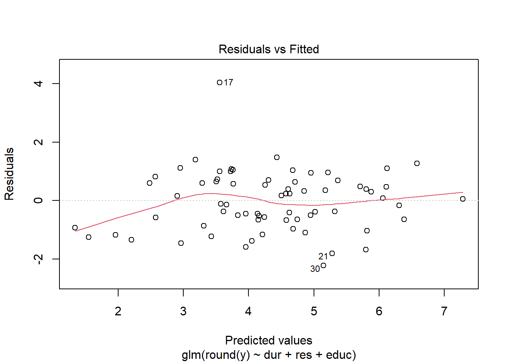
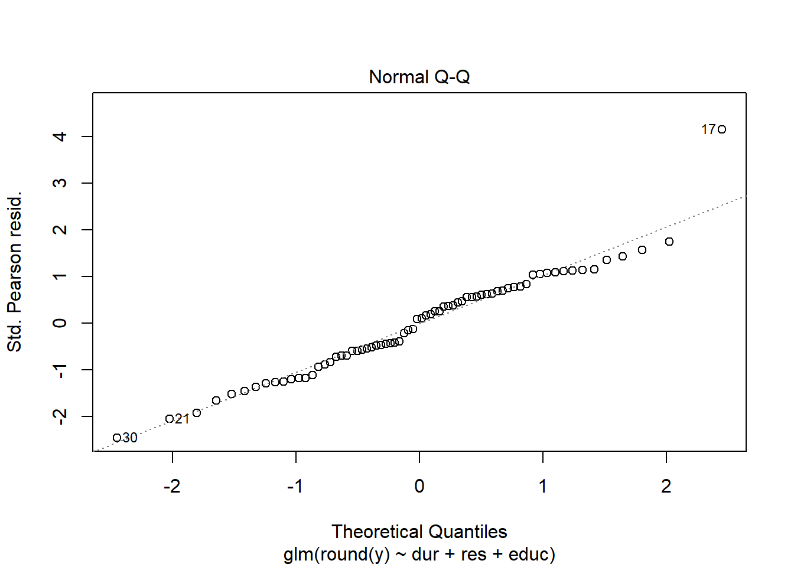
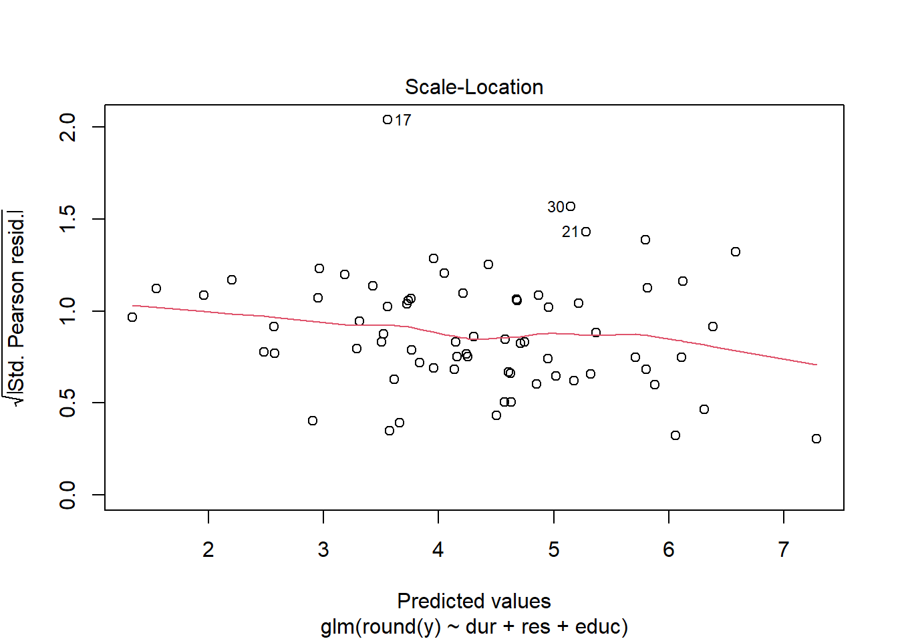
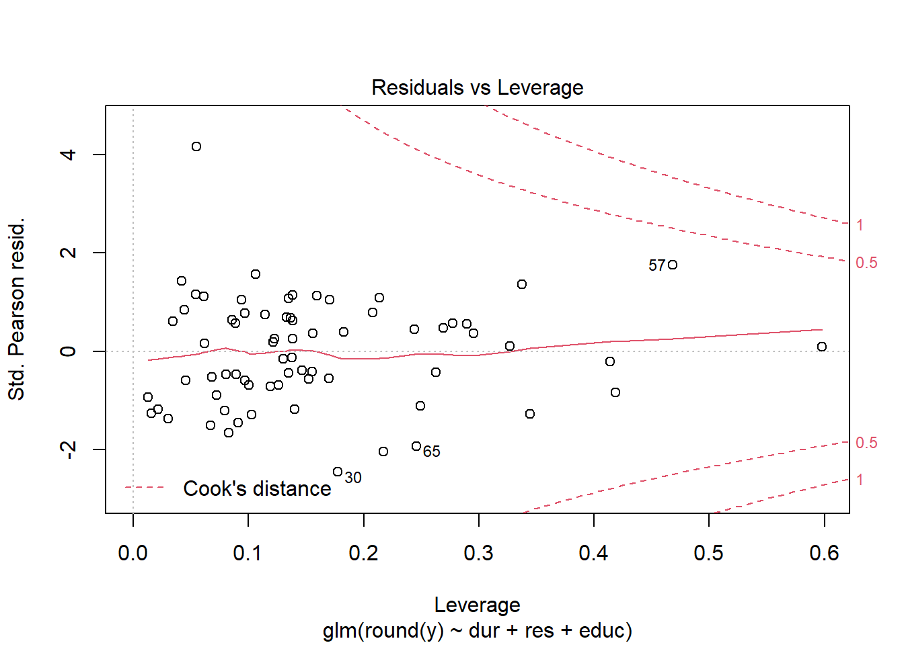

3 Poisson Regression
3.1 Children Ever Born Data
The “Children Ever Born” (CEB) dataset consists of grouped data on the number of births of Fijian women. The women are described according to their marriage duration in years in ordinal levels: (0-4, 5-9, 10-14, 15-19, 20-24, 25-29); their place of residence (Suva—the capital city—Urban, or Rural); and, their level of education (none, lower primary, upper primary, secondary or greater). The count, mean, and variance of the number of children ever born, and the group size, is given for each group of women by cross-classified factorial level. These summaries are sufficient to model counts of children ever born by a Poisson distribution (each individual woman’s count is not needed).
The CEB data is an example of an observational dataset — the characteristics of the individuals are inherent rather than set by experimenters as in an experimental/controlled trial—but, that should be clear from the context. Several interesting questions may be answered using this data, such as: are more or fewer born children associated with higher or lower education among Fijian women; does an urban versus rural living location influence the number of children ever born; and, do the number of children ever born steadily increase with marrige duration, or tend to plateau?
Download ceb.dat
ceb <- read.table('ceb.dat')
head(ceb)## dur res educ mean var n y
## 1 0-4 Suva none 0.50 1.14 8 4.00
## 2 0-4 Suva lower 1.14 0.73 21 23.94
## 3 0-4 Suva upper 0.90 0.67 42 37.80
## 4 0-4 Suva sec+ 0.73 0.48 51 37.23
## 5 0-4 urban none 1.17 1.06 12 14.04
## 6 0-4 urban lower 0.85 1.59 27 22.95A statistician (or student statistician) familiar with multiple linear regression and/or ANOVA for factorial experiments may instinctively choose to fit a Gauss-Markov linear model to the CEB data, treating the responses as independent normal random variables. However, since the responses are counts, a Poisson model is more reasonable. But, just how does one perform Poisson regression? — as opposed to the familiar multiple linear regression described by the Gauss-Markov model: \[Y = X\beta+ \epsilon, \quad \epsilon \sim N_{n}(0_{n\times 1}, \sigma^2 I_n).\]
That is the motivation for this chapter, in which we will explore the family of Generalized Linear Models from defining and fitting the model, to performing inference and model diagnostics, all within the context of the CEB example.
3.2 Defining GLMs
For the CEB data we naturally want to model the CEB grouped counts as realizations of Poisson r.v.’s with means \(n_{j}x^\top_j\beta\) where \(n_j\) is the number of women in the \(j^{\text{th}}\) factorial group, \(x_j\) is the vector of their common covariates, and \(\beta\) is the common regression coefficient vector. Then, the likelihood of the model is
\[L(\beta;\text{data}) = \prod_{j=1}^{70}\frac{(n_{j}x^\top_j\beta)^{y_j}e^{-n_{j}x^\top_j\beta}}{y_j!}\]
and the loglikelihood is given by
\[\ell(\beta;\text{data}) = \text{constant} + \sum_{j=1}^{70}y_j\log(n_{j}x^\top_j\beta) - n_{j}x^\top_j\beta.\]
The Poisson likelihood is a member of the Exponential Family, which contains all distributions with PDFs that may be expressed as
\[f(y;\theta,\phi) = \exp\{[y\theta - b(\theta)]/a(\phi) + c(y,\phi)\}.\]
Looking ahead, we will apply the exponential family model above to independent but not identically distributed responses, similar to the data we encounter in multiple linear regression and the Gauss-Markov model, so we will allow \(\theta\) as well as the forms of the \(a\), \(b\), and \(c\) functions to vary over observations, but we will fix \(\phi\), so that the loglikelihood for a sample of size \(n\) may be written as follows:
\[\ell(\beta;\text{data}) = \sum_{i=1}^n \{[y_i\theta_i - b_i(\theta_i)]/a_i(\phi) + c_i(\phi, y_i)\}.\]
The Poisson regression model for grouped data is a fairly simple member of this family, having \(\theta = \log (n_{j}x^\top_j\beta)\), \(\phi = a(\phi) = 1\), and \(b(\theta) = \exp(\theta) =n_{j}x^\top_j\beta\). In fact, it is very often the case that GLMs satisfy \(a(\phi)\propto \phi\) up to a known constant.
In general, GLMs satisfy
\[E(Y) = b'(\theta) \quad \text{and}\quad V(Y) = b''(\theta)a(\phi).\]
For the Poisson regression model, in particular, we have
\[\theta = \log(n_{j}x^\top_j\beta); \quad b(\theta) = \exp(\theta); \quad \text{and}\quad a(\phi) = 1\]
\[E(Y) = b'(\theta) = \frac{\partial}{\partial \theta}\exp(\theta) = \exp(\theta) = n_{j}x^\top_j\beta; \text{ and,}\]
\[V(Y) = b''(\theta)a(\phi) = \frac{\partial^2}{\partial \theta^2}\exp(\theta) = \exp(\theta) = n_{j}x^\top_j\beta.\]
3.3 Fitting GLMs
Like any other model defined by a likelihood, GLMs may be fit by maximizing the (log)likelihood. But, it is generally not the case that the maximizers (MLEs) are available in closed form. Instead, they are computed iteratively using Newton’s method or a similar iterative procedure. Refer again to the exponential family loglikelihood using the usual representation \(a_i(\phi) = \phi/w_i\) where \(w_i\) are known constants:
\[\ell(\beta;\text{data}) = \sum_{i=1}^n \{w_i[y_i\theta_i - b_i(\theta_i)]/\phi + c_i(\phi, y_i)\}.\]
Let \(\mu_i = E(Y_i)\). Then, \(b'(\theta_i) = \mu_i\), or, equivalently, \(g_c(\mu_i) = \theta_i\) where \(g_c\) is termed the canonical link; for example, \(g_c := \log\) for the Poisson distribution. Additionally, let \(g\) link the mean to the linear function of covariates, i.e., \(g(\mu_i) = \eta_i = x_i^\top\beta\); e.g., \(g\) is the identity function for the Poisson model. Since \(b_i'(\theta_i)\) is also equal to \(\mu_i\) in the exponential family, we may differentiate the loglikelihood with respect to the regression parameter \(\beta\) using the chain rule:
\[\frac{\partial \ell}{\partial \beta_j} = \sum_{i=1}^n \left\{\frac{w_i}{\phi}\left[y_i\frac{\partial \theta_i}{\partial\beta_j} - \frac{\partial b_i(\theta_i)}{\partial \beta_j}\right] + c_i(\phi, y_i)\right\}\]
using
\[\frac{\partial \theta_i}{\partial \beta_j} = \frac{\partial \theta_i}{\partial \mu_i}\frac{\partial \mu_i}{\partial \beta_j}.\]
Since \(\mu_i = b_i'(\theta_i)\) we have \(\partial \theta_i/\partial \mu_i = 1/b_i''(\theta_i)\). But, in light of \(\mu_i = b'(\theta_i)\) we may always write \(b_i''(\theta_i)\) as a function of \(\mu_i\), i.e., \(V(\mu_i) = b_i''(\theta_i)/w\) so that \(V(Y_i) = V(\mu_i)\phi\). Moreover, since \(\mu_i = g^{-1}(x_i^\top \beta)\) we have \(\partial\mu_i/\partial \beta_j = x_{ij}/g'[g^{-1}(x_i^\top \beta)]\). Substituting, we can write the score function using only \(\mu_i\) as follows:
\[\frac{\partial \ell}{\partial \beta_j} = \frac{1}{\phi}\sum_{i=1}^n \frac{y_i - \mu_i}{g'(\mu_i)V(\mu_i)}x_{ij}.\]
The second (mixed partial) derivative may be written
\[\frac{\partial^2 \ell}{\partial \beta_j\partial\beta_k} = -\frac{1}{\phi}\sum_{i=1}^n \frac{x_{ij}x_{ik}h(\mu_i)}{g'(\mu_i)^2V(\mu_i)}\]
where \(h(\mu_i) = 1+(y_i-\mu_i)\{V'(\mu_i)/V(\mu_i) + g''(\mu_i)/g'(\mu_i)\}\). The expectation of the second derivative (which when multiplied by -1 appears in the Fisher information matrix) is the same quantity with \(h(\mu_i)\) replaced by \(E[h(\mu_i)]\), which simply equals 1 because \(E(Y_i - \mu_i) = 0\).
The Hessian of the loglikelihood is clearly a quadratic form \(\phi^{-1}X^\top WX\) where \(X\) is the \(n\times p\) design matrix of covariates and \(W = [h(\mu_i)/\{g'(\mu_i)^2V(\mu_i)\}]\) is an \(n\times n\) diagonal matrix of “weights”. Less obvious, we may define \(G = \text{diag}\{g'(\mu_i)/h(\mu_i)\}\) so that the gradient of the loglikelihood equals \(\phi^{-1}X^\top WG(y - \mu)\). With this clever rewriting, Newton’s method updates take on the form of a weighted least squares solution:
\[\begin{align*}
\beta^{[k+1]} &= \beta^{[k]} + (X^\top WX)^{-1}X^\top WG(y-\mu)\\
& = (X^\top WX)^{-1}X^\top W\{G(y-\mu)X+\beta^{[k]}\}\\
& = (X^\top WX)^{-1}X^\top Wz
\end{align*}\]
where \(z := G(y-\mu)+X\beta^{[k]}\) is sometimes referred to as the “pseudo-data”. Repeating the weighted least squares update, iteratively, until convergence, is termed iteratively re-weighted least squares (IRLS) since, of course, the weights in \(W\) are updating with each iteration.
For our Poisson regression based on the grouped CEB data we have the following likelihood, gradient, and Hessian: \[\begin{align*} &\ell(\beta;\text{data}) = \sum_{j=1}^{70} \left[y_j x_j^\top \beta - n_j e^{x_j^\top \beta}\right]\\ &\nabla_s \ell = \sum_{j=1}^{70} \left[y_j x_{js} - n_j x_{js}e^{x_j^\top \beta}\right]\\ &\nabla^2_{s,t} \ell = -\sum_{j=1}^{70} n_j x_{js}x_{jt}e^{x_j^\top \beta}. \end{align*}\]
Rewriting the Hessian and gradient as above for the general exponential family GLM we have \[W_{k,k} = n_k\mu_k\quad\text{and}\quad G_k = (n_k\mu_k)^{-1}\] so that the IRLS updates are given by \[(X^\top WX)^{-1}X^\top Wz\] with \(z_k = (n_k\mu_k)^{-1}(y_k - n_k\mu_k) + x_k^\top \beta\).
3.3.1 IRLS for the CEB data
Below we compute the MLEs for the Poisson regression of the grouped CEB data “by hand” using IRLS—and, also compare to the glm function in R. For our calculation we initialize the elements of the parameter vector \(\mu\) by the sample means \(\mu_j = y_j/n_j\). We set the pseudo data equal to \(z_j = -(1/\mu_j)(y_j / n_j - \mu_j) + log(\mu_j)\) and iterate the computation of least squares estimates \(\hat\beta\).
Note that the CEB data contains grouped “counts” computed as \(y_j = \mu_jn_j\) where the \(\mu_j\) values are rounded. And, as a result, the \(y_j\) counts are not integers. This does not affect our “by hand” calculation of \(\hat\beta\) whatsoever because we never use the full Poisson PMF in our computations; the glm function in R, on the other hand, will throw many warnings if the \(y_j\) values are not rounded, apparently because it uses the PMF via dpois “under the hood”. The only differences between our fitted \(\hat\beta\) and glm’s are due to rounding \(y_j\)’s.
n <- nrow(ceb)
group.sizes <- ceb$n
Y <- ceb$y
# IRLS - factor coding
# initialize with mu = Y/group.sizes
options(contrasts = c('contr.treatment', 'contr.treatment'))
X <- model.matrix(y~dur+res+educ, data = ceb)
mu <- Y/group.sizes
XB <- log(mu)
W <- diag(as.numeric(mu))
z <- -(1/mu)*(Y/group.sizes-mu) + XB
beta <- solve(t(X)%*%W%*%X)%*%t(X)%*%W%*%z
tol <- 0.0001
difference <- 1
maxiter <- 100
iter <- 1
while((difference > tol) & (iter < maxiter)){
XB <- X%*%beta
mu <- exp(XB)
W <- diag(as.numeric(group.sizes*mu))
z <- (Y/diag(W) - rep(1,n)) + XB
beta.old <- beta
beta <- solve(t(X)%*%W%*%X)%*%t(X)%*%W%*%z
difference <- max(abs(beta - beta.old))
iter<-iter+1
}
beta## [,1]
## (Intercept) 0.05695417
## dur10-14 1.37053208
## dur15-19 1.61423104
## dur20-24 1.78548879
## dur25-29 1.97679469
## dur5-9 0.99765038
## resSuva -0.15121728
## resurban -0.03895822
## educnone -0.02308034
## educsec+ -0.33266474
## educupper -0.12474575
## the glm function can be used with offset equal to logarithm of the group sizes
my.glm <- glm(round(y)~dur+res+educ, family = poisson(link = 'log'), data = ceb, offset = log(n))
summary(my.glm)##
## Call:
## glm(formula = round(y) ~ dur + res + educ, family = poisson(link = "log"),
## data = ceb, offset = log(n))
##
## Deviance Residuals:
## Min 1Q Median 3Q Max
## -2.2960 -0.6641 0.0725 0.6336 3.6782
##
## Coefficients:
## Estimate Std. Error z value Pr(>|z|)
## (Intercept) 0.05754 0.04803 1.198 0.231
## dur10-14 1.36940 0.05107 26.815 < 2e-16 ***
## dur15-19 1.61376 0.05119 31.522 < 2e-16 ***
## dur20-24 1.78491 0.05121 34.852 < 2e-16 ***
## dur25-29 1.97641 0.05003 39.501 < 2e-16 ***
## dur5-9 0.99693 0.05274 18.902 < 2e-16 ***
## resSuva -0.15166 0.02833 -5.353 8.63e-08 ***
## resurban -0.03924 0.02463 -1.594 0.111
## educnone -0.02297 0.02266 -1.014 0.311
## educsec+ -0.33312 0.05390 -6.180 6.41e-10 ***
## educupper -0.12425 0.03000 -4.142 3.44e-05 ***
## ---
## Signif. codes: 0 '***' 0.001 '**' 0.01 '*' 0.05 '.' 0.1 ' ' 1
##
## (Dispersion parameter for poisson family taken to be 1)
##
## Null deviance: 3731.852 on 69 degrees of freedom
## Residual deviance: 70.665 on 59 degrees of freedom
## AIC: 522.14
##
## Number of Fisher Scoring iterations: 43.4 Inference on GLMs
No doubt you noticed the glm function output produces standard errors, “z” values, and p-values for each fitted coefficient, just as you would find accompanying summarized lm output. But, what is the justification for these p-values?
Since \(\hat\beta\) is an MLE, standard likelihood theory holds that \(\hat\beta \stackrel{\cdot}{\sim}N_p(\beta, I^{-1}(\beta))\) for “large” \(n\) where \(I^{-1}(\beta)\) is the Fisher information. As discussed above, the “observed information” (which is the Hessian) is equal to \(-\phi^{-1}(X^\top WX)^{-1}\) where \(W\) is the weight matrix in the final iteration of IRLS, and \(-\phi^{-1}(X^\top WX)^{-1}\) coincides with the Fisher Information when we replace \(h(\mu_i)\) by \(E(h(\mu_i))=1\) in the IRLS (then called Fisher scoring) updates. Therefore, \(\hat\beta \stackrel{\cdot}{\sim}N_p(\beta, \phi^{-1}(X^\top W X)^{-1})\) for “large” \(n\), but this is only useable if \(\phi\) is known (which it is, and equals 1, for the Poisson and Binomial models). Otherwise, we replace \(\phi\) by its MLE and use the corresponding Student’s \(t\) distribution with \(n - p\) degrees of freedom rather than the standard normal for inference on \(\beta_j\).
The upshot is that we may base tests for, e.g., \(H_0:\beta_j = 0\), on Student’s \(t\) with \(n-p\) df; i.e., \[\text{Reject }H_0:\beta_j = 0 \text{ if }\left|\frac{\hat\beta_j}{\sqrt{\hat\phi^{-1}(X^\top W X)^{-1}_{j,j}}}\right| > t_{1-\alpha/2,n-p}.\] Multivariate Wald simultaneous \(100(1-\alpha)\%\) confidence regions are given by the eliiptical contours: \[\phi\text{ known: }\quad \{\beta: (\hat\beta - \beta)^\top\phi^{-1}(X^\top W X)^{-1}(\hat\beta - \beta)< \chi^2_{1-\alpha,p} \}\] \[\phi\text{ unknown: }\quad \{\beta: (\hat\beta - \beta)^\top\hat\phi^{-1}(X^\top W X)^{-1}(\hat\beta - \beta)< F_{1-\alpha,p, n-p} \}\]
Moreover, an approximate \(95\%\) CI for the mean response \(\mu = g^{-1}(x^\top \beta)\) for covariate vector \(x\) is given by the Delta method interval:
\[g^{-1}(x^\top \hat\beta)\pm t_{1-\alpha/2,n-p}\sqrt{\hat\phi^{-1} \left[\nabla_{\beta} g^{-1}(x^\top \beta)\right]^\top(X^\top W X)^{-1}\left[\nabla_{\beta} g^{-1}(x^\top \beta)\right]}.\]
In multiple linear regression (Gauss-Markov) models we use partial F tests (which are likelihood ratio tests) to test for significance of sets of covariates, i.e., \(H_0: \beta_j = \beta_{j+1} = \cdots = \beta_{j+\ell} = 0\). For GLMs, similar tests are available. For models where \(\phi\) is known, we have
\[-2\{\ell(\hat\beta_{h_0}) - \ell(\hat\beta)\}\stackrel{H_0}{\sim} F_{\ell,n-p}\]
where \(\hat\beta_{h_0}\) is the MLE under the null hypothesis where \(\ell\) coefficients are set equal to 0.
There are several methods to estimate \(\phi\) when unknown. Pearson’s method observes that \[\phi^{-1}X^2 \stackrel{\cdot}{\sim}\chi^2_{n-p}\quad \text{where}\quad X^2 :=\sum_{i=1}^n \frac{(Y_i - \hat\mu_i)^2}{\phi V(\hat\mu_i)}\] if the model fits the data adequately. Hence, \(\hat\phi_P = X^2/(n-p)\) ought to be a good estimate of \(\phi\). For certain data sets, such as Poisson data with low counts, the Pearson estimate may behave badly, and a modified version (Fletcher’s estimator) is preferred: \[\hat\phi_F = \frac{\hat\phi_P}{1-\overline s}, \quad\text{where}\] \[\overline s:=n^{-1}\sum_{i=1}^n V'(\hat\mu_i)\frac{(y_i - \hat\mu_i)}{V(\hat\mu_i)}.\]
The Deviance difference for models A and B where \(A\subset B\) is given by \(D_A - D_B = -2\{\ell(\hat\beta_A) - \ell(\hat\beta_B)\}\phi\). The scaled deviance difference is \[D_A^* - D_B^* = -2\{\ell(\hat\beta_A) - \ell(\hat\beta_B)\}\stackrel{\cdot}{\sim}\chi^2_{\ell}\] where the difference in number of fitted parameters is \(\ell\). Despite the notation, the scaled deviance difference does depend on \(\phi\), whereas the deviance difference does not. Two alternative tests make use of the scaled deviance to compare nested GLMs. The first is analogous to the partial F test: \[F = \frac{(D_A^* - D_B^*)/\ell}{D_B^* / (n-p)}\stackrel{\cdot}{\sim} F_{\ell, n-p}\] but the approximation to the F distribution is very rough. Alternatively, we can replace the scale parameter in the scaled deviance by its Pearson (or Fletcher) estimator and obtain \[\hat D_A^* - \hat D_B^*\stackrel{\cdot}{\sim}\chi^2_{\ell},\] where the “hat” on the scaled deviances indicates their dependence on \(\hat\phi\).
3.4.1 Inference and prediction for the CEB data using Poisson regression
Next, we’ll demonstrate computations of confidence intervals and tests for significance of sets of covariates within the Poisson regression model for the CEB data. We can either do these computations “by hand” using the results of our IRLS or we can use built-in R functions like glm and confint.
For Wald-type confidence intervals for regression coefficients we require the inverse Hessian (the estimate of the inverse Fisher information, equal when Fisher scoring is used). We compute this from the final iteration of IRLS (assuming the algorithm converged). For most GLMs we will need to estimate the scale parameter \(\phi\) and we include the Pearson and Fletcher estimates below—but in the Poisson model \(\phi=1\). Note both estimates are close to 1. The p-values included in the summarized glm output imply the intercept is not significantly different from zero, but that several other coefficients are different from zero, including, e.g., \(\beta_1\), \(\beta_2\), and \(\beta_3\). Our Wald-type CIs and p-values agree with the glm p-values; for example, our 95% CI for \(\beta_0\) computed “by hand” is (-0.0372 0.1511), suggesting the intercept is not significantly different from zero, and our 95% CI for \(\beta_1\) is (1.2704, 1.4706) with a p-value for the test of \(\beta_1 = 0\) that is indistinguishable from 0.
We computed the deviance difference (which is minus twice the difference in loglikelihood) between the intercept-only model and the full model. The deviance difference is about 3661 on ten degrees of freedom (the difference in number of fitted coefficients between the models). If the intercept only model fits, then this deviance difference should be comparable to a Chi-squared r.v. with 10 degrees of freedom, but the corresponding p-value is basically zero, supporting the claim that the full model fits much better than the intercept-only model. Compare our deviance difference calculation to the output of glm: glm includes the null deviance and residual deviance, the difference of these two gives the deviance difference statistic used to compare the intercept-only and full models. It is about 3661, agreeing almost exactly with our “by hand” calculation.
Hessian <- t(X)%*%W%*%X
inv.Hessian <- solve(Hessian)
p <- length(beta)
# Just for illustration, phi = 1 for Poisson model
Pearson.X2 <- sum(((Y - group.sizes * mu)^2) / (group.sizes * mu))
Pearson.phi <- Pearson.X2 / (n-p)
s.bar <- mean((Y - group.sizes * mu) / (group.sizes * mu))
Fletcher.phi <- Pearson.phi/(1-s.bar)
Pearson.phi ## [1] 1.211949
Fletcher.phi ## [1] 1.194283
# CIs for the first 4 regression coefficients
# If phi were unknown, it's estimate would appear in the estimated standard error of the
# estimated coefficient
# beta[1] + qt(c(0.025,0.975),n-p)*sqrt((1/Pearson.phi)*inv.Hessian[1,1])
beta[1] + qnorm(c(0.025,0.975))*sqrt(inv.Hessian[1,1])## [1] -0.03721264 0.15112097## [1] 1.270425 1.470639## [1] 0## [1] 1.513870 1.714592## [1] 1.685091 1.885886
# The R function confint can also be used with GLMs to provide confidence intervals for coefficients
confint(my.glm, 'dur10-14')## Waiting for profiling to be done...## 2.5 % 97.5 %
## 1.270141 1.470370
# "Model F Test" - testing that all (non-intercept) coefficients equal zero
# for Poisson model, since phi is known, we have a LRT equivalent to a partial F test
# based on deviance difference
Ybar <- sum(Y)/sum(group.sizes)
D <- -2*(sum(Y*log(group.sizes*Ybar))-sum(group.sizes*Ybar) - sum(Y*log(group.sizes*mu))+sum(group.sizes*mu))
Ybar## [1] 3.960497
D## [1] 3660.872
1-pchisq(D,p-1)## [1] 0
# with rounded Ys and using glm output
Yr <- round(Y)
mu.glm <- exp(X%*%matrix(my.glm$coefficients,p,1))
Ybar <- sum(Yr)/sum(group.sizes)
D <- -2*(sum(Yr*log(group.sizes*Ybar))-sum(group.sizes*Ybar) - sum(Yr*log(group.sizes*mu.glm))+sum(group.sizes*mu.glm))
Ybar## [1] 3.960403
D## [1] 3661.186
1-pchisq(D,p-1)## [1] 03.5 Model Checking/Diagnostics
It is essential statistical practice to check whether the model adequately fits the data. If the model fits poorly, then inferences/predictions garnered from the model are suspect. In multiple linear regression we assess model fit by analyzing residuals. When the multiple linear regression model fits, the residuals should be approximately standard normal. Lack of fit manifests in residuals that are skewed or heavy-tailed, contain outliers, or tend to increase in variability with one or more covariates and/or the predicted responses.
Model-checking for GLMs can be done in essentially the same manner—the key is to find a quantity that reasonably fills the role of residuals in multiple linear regression. For GLMs, there are two choices, the Pearson residuals and the deviance residuals.
Pearson residuals are defined \(e^P_i = \frac{Y_i - \hat\mu_i}{\sqrt{V(\mu_i)}}\), or, sometimes, \(e^P_i = \frac{Y_i - \hat\mu_i}{\sqrt{\hat\phi V(\mu_i)}}\). The first definition results in quantities that should be approximately zero-mean normal random variates with variance \(\phi\) whereas the second definition provides standard normal quantities. Some practitioners prefer the deviance residuals to the Pearson residuals as the latter are often observed to be asymmetric and, hence, not as “normal” as expected. The deviance is equal to \[\text{Deviance} = -2\phi\{\ell(\hat\beta) - \sup \ell\}\] where \(\ell(\hat\beta)\) is the loglikelihood evaluated at the MLEs and \(\sup \ell\) is the loglikelihood with \(\mu_i = y_i\), i.e., a totally saturated model. Multiplying by \(\phi\) removes the dependence of the loglikelihood on the scale parameter. The deviance can be written as a sum of terms, say, \(\text{Deviance} = \sum_{i=1}^n d_i\), and each observation’s contribution \(d_i\) to the deviance is used to define the deviance residuals as follows: \[e^D_i = \text{sign}(y_i - \mu_i)\sqrt{d_i}.\]
3.5.1 Residual analysis for CEB data
Using either the deviance residuals or the Pearson residuals shows a few important things. First, the residuals are approximately standard normal, with the exception of one “outlier”, observation 17. Second, if we sort the observations by fitted mean response \(\hat\mu_i\) from least to greatest, we see absolutely no trend up or down, or any pattern at all, in the residuals. This implies we have correctly modeled the mean-variance relationship, and that we have also correctly modeled the mean as a linear function of the covariates.
We obtain similar plots by simply running “plot(glm object)”, but there are some default differences. Plotting a glm object will provide plots of “residuals” versus “fitted values”, but in fact, the labels on these plots are slightly misleading. The residuals vs. fitted values plots uses either Pearson or deviance residuals (cannot tell for sure from the plot or the documentation) versus the logarithm of the fitted responses \(\log(\hat y_j) =\log(n_j\hat\mu_j)\).
dev <- -2*((Y*log(group.sizes*mu))-(group.sizes*mu) - ((Y*log(Y))-(Y)))
deviance.resids <- ifelse((Y-group.sizes*mu) < 0,-1,1)*sqrt(dev)
pearson.resids <- (Y - group.sizes*mu)/sqrt(group.sizes*mu)
# residual plots using deviance residuals
qqnorm(deviance.resids)
qqline(deviance.resids)
shapiro.test(deviance.resids)##
## Shapiro-Wilk normality test
##
## data: deviance.resids
## W = 0.96065, p-value = 0.02719
hist(deviance.resids, freq = FALSE)
dev.norm <- function(x) dnorm(x,mean(deviance.resids), sd(deviance.resids))
curve(dev.norm, -5,5, add = TRUE)
plot(mu, deviance.resids)
shapiro.test(pearson.resids)##
## Shapiro-Wilk normality test
##
## data: pearson.resids
## W = 0.94988, p-value = 0.007147
hist(pearson.resids, freq = FALSE)
pearson.norm <- function(x) dnorm(x,mean(pearson.resids), sd(pearson.resids))
curve(pearson.norm, -5,5, add = TRUE)
plot(mu, pearson.resids)
# plots are using what look like Pearson (or maybe deviance) residuals versus predicted values under canonical link, i.e. log(Y hat)
plot(log(group.sizes*mu), pearson.resids)
plot(my.glm)
3.6 Outlier analysis using Cook’s distance
Outliers are observations corresponding to large residuals. They may occur due to chance, or, more likely, indicate a lack of model fit for a specific observation. The lack of fit may be due to something innocuous like a mistake made in recording data; or, it may be that the observation in question is very different from the others in the sample, and does not follow the same response-covariate relationship.
Outliers are not a problem, however, unless their inclusion causes the fitted model to be substantially different than had they been excluded. Therefore, we do not necessarily care that a particular residual is large, but that it is influential on the model fit.
In multiple linear regression we may measure this influence by Cook’s distance of the data point, which is related to both the magnitude of its residual and its leverage, as measured by the hat (or influence) matrix. For GLMs we can define the Cook’s distance in the same manner: the Cook’s distance of data point \(k\) is given by \[C_k = \frac{1}{(p+1)}\sum_{i=1}^n \frac{(\hat\mu_i^{[k]} - \hat\mu_i)^2}{\hat\phi V(\hat\mu_i)}; \text{ or}\] \[C_k = \frac{(e^P_k)^2}{\hat\phi (p+1)}\frac{h_k}{(1-h_k)^2}\] where \(H = W^{1/2}X(X^\top W X)^{-1}X^\top W^{1/2}\) is the hat matrix and \(h_k\) is its \(k^{th}\) diagonal entry. Large Cook’s distance implies the model predictions change substantially when the data point in question is removed.
3.6.1 Outlier analysis for the CEB data
Typically data points with Cook’s distance \(>1\) are considered highly influential and the case for their exclusion is considerable. In this case, our apparent outlier is not influential, nor is it even the most influential observation sampled.
Below we have computed Cook’s distance “by hand” and by using the corresponding built-in R function; the only (very slight) difference between the two seems to be caused by the fact the built-in function uses the glm object, which we fitted after rounding the responses, whereas our “by hand” calculation uses Pearson residuals based on the original (unrounded) responses.
ceb2 <- ceb[-17,]
my.glm2 <- glm(round(y)~dur+res+educ, family = poisson(link = 'log'), data = ceb2, offset = log(n))
W2 <- sqrt(W)
h <- W2%*%X%*%solve(t(X)%*%W%*%X)%*%t(X)%*%W2
((pearson.resids[17]^2)/p)*(h[17,17]/((1-h[17,17])^2))## [1] 0.0912897
cd <- cooks.distance(my.glm)
cd[17]## 17
## 0.09123744
sort(cd)## 44 12 16 43 58 26
## 0.0001578983 0.0002173653 0.0003181272 0.0004391595 0.0004872775 0.0008276467
## 31 48 69 5 40 37
## 0.0009604834 0.0010416260 0.0011600877 0.0011813567 0.0015364693 0.0017374273
## 63 15 59 64 8 18
## 0.0017913034 0.0020157684 0.0022231406 0.0023307859 0.0024333875 0.0027257717
## 1 29 54 56 34 62
## 0.0027795217 0.0028483882 0.0029171612 0.0029318194 0.0030296972 0.0030322783
## 55 36 27 33 9 60
## 0.0033869538 0.0034063422 0.0048780994 0.0049440311 0.0052402581 0.0053485413
## 47 6 24 3 11 23
## 0.0055965679 0.0056512722 0.0056712755 0.0057553959 0.0059235574 0.0061112712
## 50 41 14 49 4 2
## 0.0062842199 0.0063288779 0.0064608723 0.0067079644 0.0067366794 0.0068678049
## 66 25 13 7 61 71
## 0.0072889100 0.0074308461 0.0082351514 0.0104259702 0.0110105154 0.0114006236
## 70 42 52 20 28 32
## 0.0115384460 0.0145603375 0.0149361729 0.0164709118 0.0173145140 0.0189913643
## 51 38 53 19 39 67
## 0.0191422888 0.0203317679 0.0205784895 0.0220776790 0.0225077753 0.0265192825
## 35 10 45 22 46 17
## 0.0290870153 0.0375227510 0.0462157923 0.0771290592 0.0847041708 0.0912374357
## 21 65 30 57
## 0.1058278940 0.1102296604 0.1184297114 0.2448544534